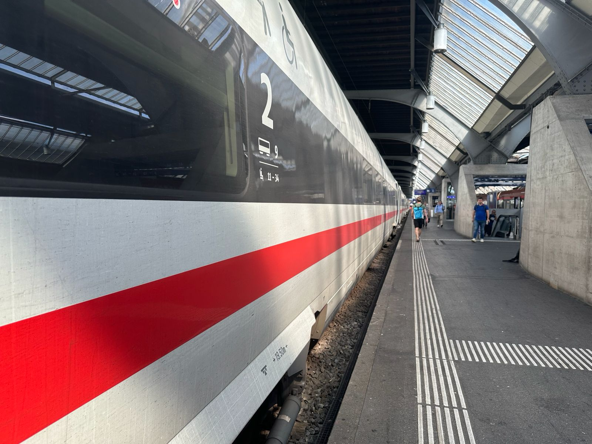
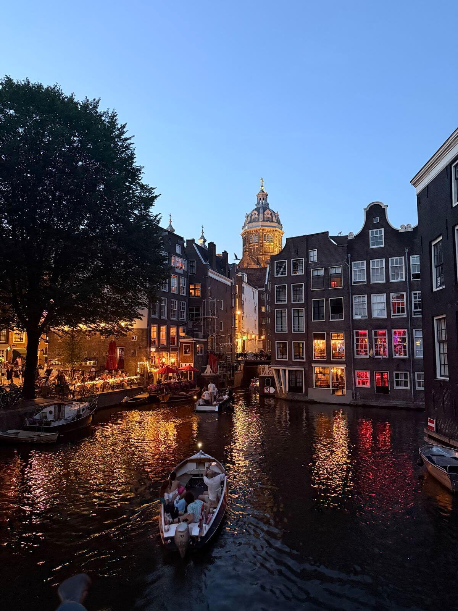

Popular Interrail Routes
Discover some of the best European journeys and tips for your Interrail adventure.
Suggested Routes

Amsterdam – Prague
Experience canals, castles, and coffee culture on this journey.
More Info
Discover some of the best European journeys and tips for your Interrail adventure.

Experience canals, castles, and coffee culture on this journey.
More Info